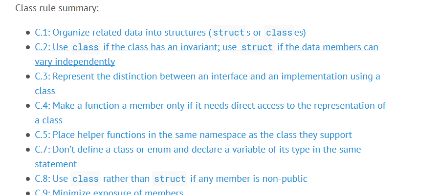
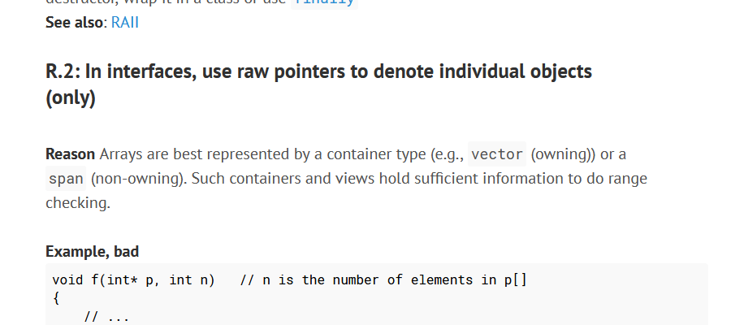
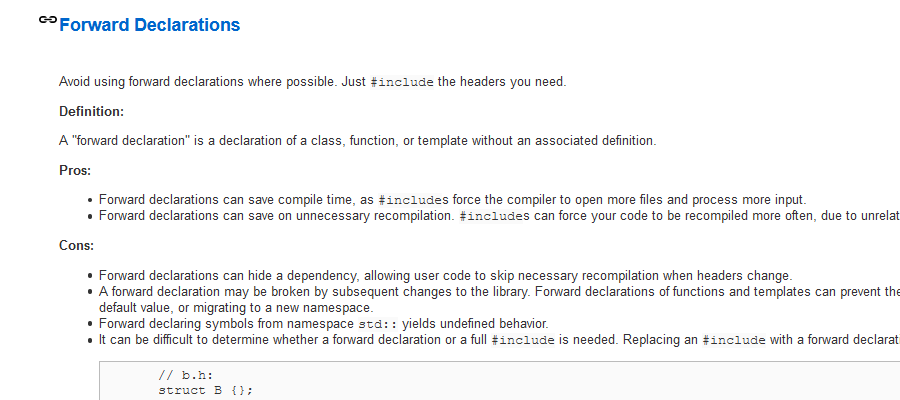
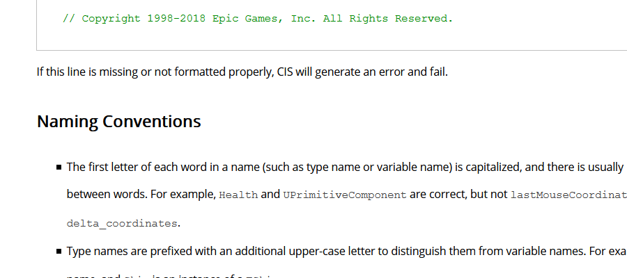
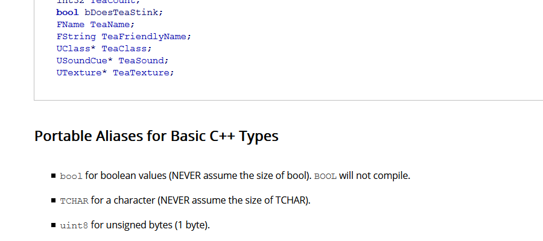
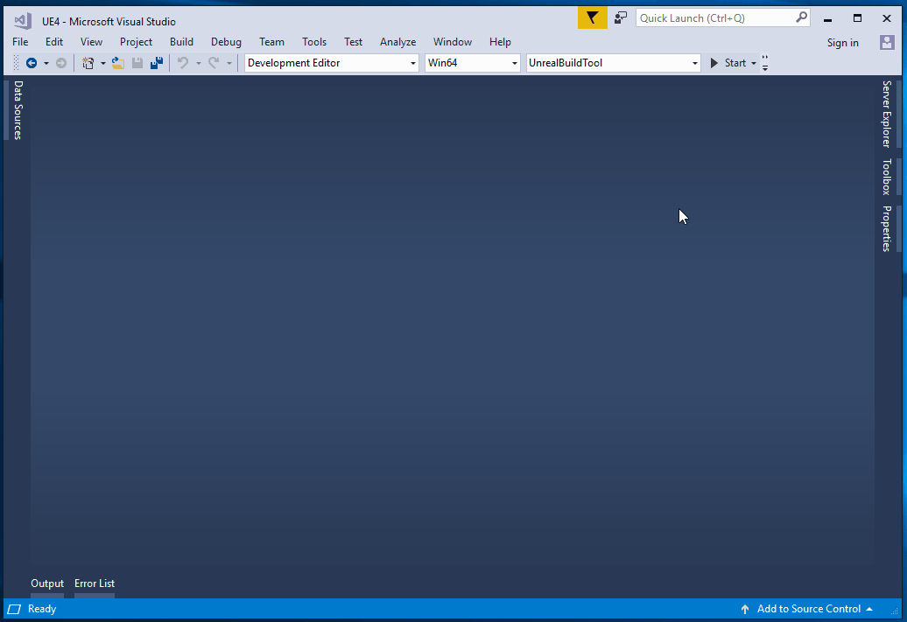
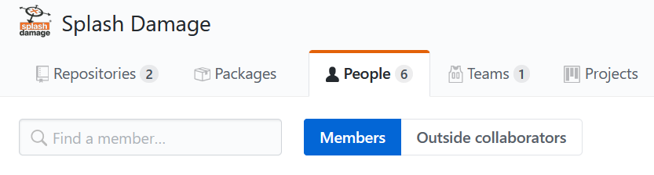

PROJECTS
. .
/ \
/ \
/ \
. .
CORE TEAM AMBASSADORS
. .
\ /
\ /
\ /
. .
github/splash-damage/coding-standardsCompiled C++ Coding Standards
Valentin Galea
@valentin_galea
More than 12 years in the industry, of which 4 at
Agenda
Background on Coding Standards
New Approach
Teams & Projects dynamic
What are Coding Standards
Coding conventions are a set of guidelines for a specific programming language that recommend programming style, practices, and methods for each aspect of a program written in that language
— Wikipedia
What are Coding Standards (cont.)
Formally adopted coding conventions become standards
Examples
C++ ISO Standard
- actual spec
- promotes specific styles
ex: all std:: types / functions are snake_case
C++ Core Guidelines
C++ Core Guidelines (cont.)

C++ Core Guidelines (cont.)

Google C++ Style Guide
Google C++ Style Guide (cont.)

Google C++ Style Guide (cont.)

Unreal Engine 4
Unreal Engine 4 (cont.)

Unreal Engine 4 (cont.)

Enforcing / Adoption
Normally presented as standalone documentation
ex: PDF, wiki’s, etc
People are supposed to study then apply in practice
Usually not machine readable
somewhat exception: Visual Studio Core Guidelines checker
Pitfalls
Grow big / Hard to navigate
Get out-of-date quickly
In separate location
outside production source code
Only select few modify or improve them
Nobody has time to read documentation! 😛
Splash Damage approach
Standards are source code files 📑
you can break the build messing with the standard!
Created and improved through code reviews
A system for easy reference and searching

The Coding Standard
2 files
SplashDamageCodingStandard.hSplashDamageCodingStandard.cpp
Located in the main source code
UE4/Game/Source/Main/…
Open Source
Unintended Consequences
Usage
Applied via code reviews

Usage (continued)
Takes the pressure off from feeling judgemental

Additional Benefits
Empowering for Juniors
hold accountable Seniors via '3rd party' standard
Useful as teaching material
introduce new paradigms
Ease of onboarding
switch projects more easy
Modify and Improve
The standard itself is changed though reviews sent to the whole team
If enough up-votes → the proposal gets submitted
.CPP Sections Walkthrough
More architectural than strict rule-sets
Mostly Unreal Engine 4 focused rather than
std::Try to cater to all experience levels
from Juniors to Principals
Automation
Layout style can be enforced with tools
We do offer
clang-formatsupportWe don’t enforce it
prefer to use as teaching material
Adoption
Splash Damage has multiple projects ongoing
Originally standard was created in one project
really took off
people embraced the idea & spirit
How to distribute to all?
Obstacles
Each project is unique in challenges
Differences across:
→ Version of UE4
→ servers and repositories
→ contracts and legal
Solution
Move to 'outside' → GitHub
Open Source under permissive licence
BSD 3-clause
Small core of maintainers across projects

Solution: Core Team
Share multiple responsibilities
Discusses major changes
Reviews and approves
PR'sIntegrates latest into own project
Solution: not enough!
Team is small, busy
Hard to enforce
More support needed…
Solution: Ambassadors
Interested people from projects
Spread awareness of standard
Call it in reviews, encourage use throughout
Meet with Core Team
add
PR's
Conclusion
Future
More avenues for teaching / advocacy / adoption
Styling can be checked by tools
clang formatetc
Techniques… harder
machine learning from commits?
@valentin_galea
We’re hiring!
Attribution
All images and material © Splash Damage